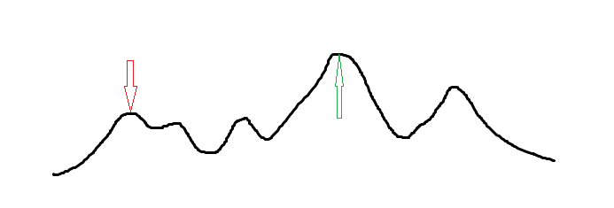

爬山算法
简介¶
爬山算法是一种局部择优的方法，采用启发式方法，是对深度优先搜索的一种改进，它利用反馈信息帮助生成解的决策。
实现¶
爬山算法每次在当前找到的最优方案 附近寻找一个新方案（一般随机差值）。如果这个新的解 更优，那么转移到 否则不变。
这种算法对于单峰函数显然可行（你都知道是单峰函数了为什么不三分呢）。
但是对于多数需要求解的函数中，爬山算法很容易进入一个局部最优解，如下图（最优解为 ，而爬山算法可能找到的最优解为 ）。

代码¶
此处代码以 「BZOJ 3680」吊打 XXX（求 个点的带权类费马点）为例。
1 2 3 4 5 6 7 8 9 10 11 12 13 14 15 16 17 18 19 20 21 22 23 24 25 26 27 28 29 30 31 32 33 | #include <cmath> #include <cstdio> const int N = 10005; int n, x[N], y[N], w[N]; double ansx, ansy; void hillclimb() { double t = 1000; while (t > 1e-8) { double nowx = 0, nowy = 0; for (int i = 1; i <= n; ++i) { double dx = x[i] - ansx, dy = y[i] - ansy; double dis = sqrt(dx * dx + dy * dy); nowx += (x[i] - ansx) * w[i] / dis; nowy += (y[i] - ansy) * w[i] / dis; } ansx += nowx * t, ansy += nowy * t; if (t > 0.5) t *= 0.5; else t *= 0.97; } } int main() { scanf("%d", &n); for (int i = 1; i <= n; ++i) { scanf("%d%d%d", &x[i], &y[i], &w[i]); ansx += x[i], ansy += y[i]; } ansx /= n, ansy /= n; hillclimb(); printf("%.3lf %.3lf\n", ansx, ansy); return 0; } |
劣势¶
其实爬山算法的劣势上文已经提及：它容易陷入一个局部最优解。当目标函数不是单峰函数时，这个劣势是致命的。因此我们要引进 模拟退火。
build本页面最近更新：，更新历史
edit发现错误？想一起完善？ 在 GitHub 上编辑此页！
people本页面贡献者：
copyright本页面的全部内容在 CC BY-SA 4.0 和 SATA 协议之条款下提供，附加条款亦可能应用